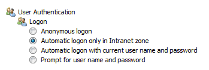

Man-in-the-middle attack
Man-in-the-middle attacks, where an attacker takes over the traffic of a victim, are often quite disruptive in enterprise networks, especially when using techniques such as ARP spoofing. However, when corporate devices are connected to untrusted networks (such as public WiFi networks), an attacker can attack the victim and intercept traffic which is not secured with TLS, redirecting this to a location trusted by the victim’s workstation. The victim will then automatically authenticate if Automatic Intranet Detection is enabled (which is the default).
